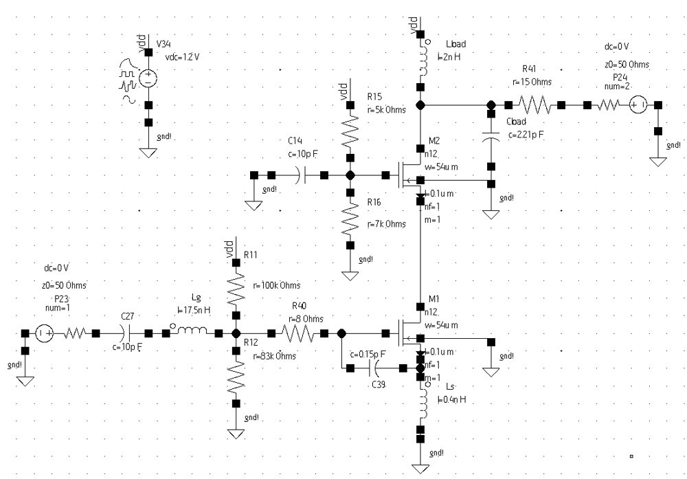
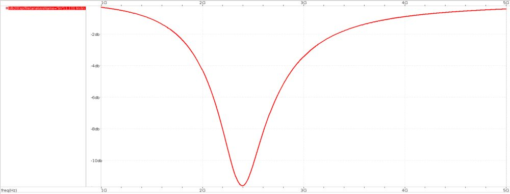

RF IC design
2.4 GHz CMOS Low-Noise Amplifier
A cascode LNA with inductive source degeneration for the 2.4 GHz ISM band, taken from hand calculations to a final design that meets every target while staying well inside its power budget.
- Process
- 90 nm CMOS
- Topology
- Cascode, inductive degeneration
- Scope
- Matching, stability, noise, linearity
Key results
- Power gain 17.5 dB, reverse isolation −46.5 dB, input match −11.6 dB
- Noise figure 2.45 dB at 7.77 mW (limit 12 mW)
- Unconditionally stable (K = 1.03); IIP3 = −4.0 dBm from two-tone FFT